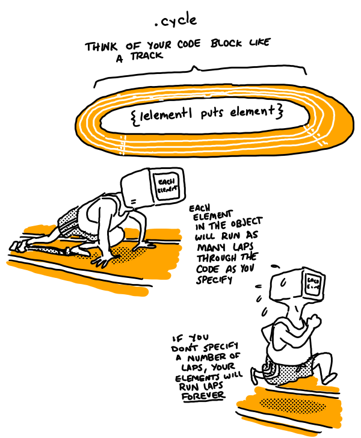

Running in Circles with .Cycle
An Enumerable Method
November 22, 2015
.cycle is an Enumerable method, so it runs on a collection object like an array or a hash. .cycle works by taking that collection object and running some block of code over each of the parts of the object multiple times. It will cycle through each item in the collection object as many times as you define. If you're familiar with some of the more advanced loop options in Ruby, .cycle works sort of like the .times loop and could work in many of the same situations but with collection objects. You can even run the .cycle through the object an infinite number of times if you don't specify an argument to the method.
For example:
array = [1,2,3,4,5]
array.cycle(2){|element| puts element + 1}
2
3
4
5
6
2
3
4
5
6
Notice after the 6, the second cycle through the code block begins. Also notice that the second code block also puts 2, 3, 4, 5, 6, not 3,4,5,6,7 as you might expect. .cycle loops through the elements, but does not change them or save the new values created.